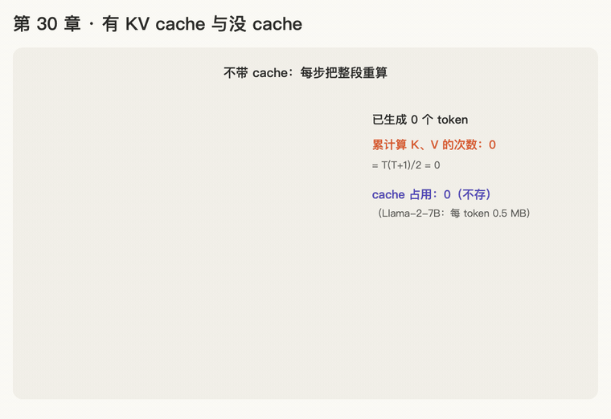

第 30 章 · 推理模式与 KV cache：生成一个 token 要做什么
本章回答：推理时
eval()、no_grad()、inference_mode()各关掉了什么？语言模型一个一个 token 往外吐，为什么要 KV cache，它有多大？为什么 decode 阶段是访存受限，batch 1 的速度上限怎么算？静态 cache + CUDA Graph 是怎么回事？
讲解日期：2026-11-14 · 上一章：第 29 章 为什么融合 · 下一章：第 31 章 读 Inductor 代码
对应原文：gpt-fast 仓库与博客「Accelerating Generative AI with PyTorch II: GPT, Fast」（〔在线〕pytorch.org/blog/accelerating-generative-ai-2/）；LLM 全链路地图（llm-full-stack/notes/00-full-stack-map.md）推理部分；Transformer 讲义 第 17 章 因果 mask；本章正确性和 inference_mode 行为在本机 torch 2.15.0 上验证过本章缩写：KV = Key / Value（注意力里的键和值）；prefill（预填充）= 一次性处理整段提示词；decode（解码）= 之后一个一个生成 token；GQA = Grouped-Query Attention（分组 / 查询 / 注意力）；tok/s = tokens per second；全部缩写见 附录 · 缩写与术语表
讲解
第一步：推理的三个开关（2026-11-14）
| 开关 | 关掉了什么 | 不开会怎样 |
|---|---|---|
model.eval() |
Dropout 不丢、BatchNorm 用存下的统计量（第 7 章） | 结果随机、随 batch 变 |
torch.no_grad() |
不记账：不建计算图、不存反向要用的张量 | 白白多占显存和时间 |
torch.inference_mode() |
no_grad 的全部，再加：新张量不带 Autograd 标签、不记版本号（第 3 章） |
比 no_grad 再快一点 |
实测：inference_mode 里算出的张量 is_inference() = True；之后想拿它去参与要求导的计算（比如喂进模型再 backward），报错 Inference tensors cannot be saved for backward。所以纯推理用 inference_mode，推理结果还要拿去训练的场景（如强化学习采样后算 loss）用 no_grad。
一句话：推理 = eval（切层的行为）+ inference_mode（关掉记账和版本号）。
第二步：一个一个 token 生成——不带 cache 的浪费（2026-11-14）
语言模型生成文本：给提示词，预测下一个 token，把它接到后面，再预测下一个……
不带 cache：第 t 步把整段（t 个 token）重新喂进模型。但因果 attention（Transformer 第 17 章）里，前面的 token 看不到后面的，所以前 t − 1 个 token 的 K、V 每一步算出来都一样。重复算了。
| 生成到第 t 步 | 不带 cache 要算的 token 数 | 带 cache |
|---|---|---|
| 1 | 1 | 1 |
| 2 | 2 | 1 |
| … | … | … |
| T | T | 1 |
| 合计 | \(\frac{T(T+1)}{2}\) | \(T\) |
KV cache：每一层把每个 token 的 K、V 存下来。新 token 来了，只算它自己的 q、k、v，k、v 接到 cache 后面，q 和整个 cache 做 attention。
验证（本机）：6 个 token、维度 8，一步步用 cache 算的输出，和一次性因果 attention 算的完全一致（allclose = True）。
一句话：因果 attention 里旧 token 的 K、V 不变，存下来（KV cache），每步只算新 token。
第三步：KV cache 有多大（2026-11-14）
每个 token、每一层要存一份 K 和一份 V：
读法：2（K 和 V）× 层数 × KV 头数 × 每头维度 × 字节。
数字演示：Llama-2-7B（L = 32，32 个头，每头 128 维，fp16 2 字节）：
一条 4096 token 的对话就是 2 GiB；batch 32 就是 64 GiB，比模型本身（14 GB）还大。
所以新模型都在压 KV cache：GQA（分组查询注意力）让好几个 q 头共用一组 K、V 头。Llama-3-8B 有 32 个 q 头但只有 8 个 KV 头，每 token 只要 \(2 \times 32 \times 8 \times 128 \times 2 = 128\) KB，是原来的 1/4。
一句话：KV cache = 2 × 层数 × KV 头数 × 头维度 × 字节，每 token；7B 约 0.5 MB/token，GQA 共享 KV 头能省几倍。
第四步：prefill 与 decode——两种完全不同的负载（2026-11-14）
| prefill（处理提示词） | decode（逐个生成） | |
|---|---|---|
| 一次处理 | 整段 T 个 token | 1 个 token |
| 矩阵乘形状 | (T, d) @ (d, d)：大 | (1, d) @ (d, d)：一行乘矩阵 |
| 第 29 章的分类 | 算力受限 | 访存受限：每个 token 要把全部权重从显存读一遍，只做很少的运算 |
decode 的速度上限（batch 1）：每生成一个 token，至少读一遍全部权重。7B bf16 = 14 GB，H100 带宽 3.35 TB/s：
这是理论天花板，和算力几乎无关。提速的方向因此也很明确：
- 减少要读的字节：量化（int8 / int4 权重，第 35 章），字节减半速度近似翻倍；
- 一次读、多次用：batch 变大，读一遍权重同时服务多个请求（推理服务的连续批处理）；
- 去掉 launch 开销：decode 每步几百个小 kernel，每个都很短，正是第 28 章说的 launch 受限场景。
一句话：prefill 算力受限，decode 访存受限；batch 1 的上限 ≈ 带宽 ÷ 权重字节（7B 在 H100 上约 240 tok/s）。
第五步：静态 cache + CUDA Graph（gpt-fast 的做法）（2026-11-14）
第 28 章说 CUDA Graph 要求形状和地址固定。可 KV cache 每一步都在变长，torch.cat 每步还会新分配显存。办法：
- 静态 KV cache：一开始就按最大长度分配好 (B, H, T_max, d) 的张量，每步用下标把新的 k、v 写进第 t 个位置（
index_copy_或直接切片赋值），形状和地址永远不变； - attention 用一个 mask 只看前 t 个位置（后面的空位遮掉，第 12 章）；
- 整个 decode 一步
torch.compile(mode="reduce-overhead")，录成 CUDA Graph，每步一次重放。
PyTorch 团队的 gpt-fast 用约 1000 行纯 PyTorch，把 Llama-2-7B 的 batch-1 decode 从约 25 tok/s 提到接近带宽上限（加上 int4 量化再翻倍），手段就是：静态 cache + compile + CUDA Graph + 量化 + 投机解码。Hugging Face transformers 里对应的是 cache_implementation="static"。
一句话：把 KV cache 改成预分配、按下标写入的静态张量，形状地址不变，decode 一步就能录成 CUDA Graph。
动画演示：有 cache 与没 cache

可交互版：animations/30-kv-cache.html。开关：KV cache 开 / 关。
怎么看：
- 每一行是生成的一步，格子是这一步要算 K、V 的 token；
- 不带 cache：第 t 步要算 t 个格子，像一个三角形，累计 T(T+1)/2；
- 带 cache：每步只算 1 个新格子（亮），旧的从 cache 里直接读（灰）；
- 右边计数器：累计计算量和 cache 占用的字节。
练习与作答记录
题 1：no_grad() 和 inference_mode() 都不记账，inference_mode 额外省了什么？什么情况下只能用 no_grad？
作答：（待作答）
题 2：一个模型 L = 40 层，40 个 q 头、8 个 KV 头，每头 128 维，bf16。每 token 的 KV cache 多大？一条 8192 token 的序列呢？
作答：（待作答）
题 3：13B 模型 bf16，A100 带宽约 2 TB/s。batch 1 decode 的理论上限是多少 tok/s？把权重量化成 int4（每参数 0.5 字节）后呢？
作答：（待作答）
口诀
推理开 eval 加 inference_mode：切层的行为、关记账和版本号；
因果 attention 旧 KV 不变，存进 cache 每步只算新 token；
每 token cache 是 2 乘层乘 KV 头乘头维乘字节，GQA 共享省几倍；
prefill 吃算力、decode 吃带宽，上限是带宽除以权重字节；静态 cache 才能录 CUDA Graph。
本章复习卡片
- P107（eval / no_grad / inference_mode 的区别；inference 张量不能存给反向）
- P108（KV cache 原理：不带 cache 累计 T(T+1)/2，带 cache T；实测一致）
- P109（KV cache 大小公式；Llama-2-7B 0.5 MB/token、4096 token 2 GiB；GQA）
- P110（prefill 算力受限、decode 访存受限；上限 = 带宽 ÷ 权重字节，7B H100 约 240 tok/s）
- P111（静态 KV cache + compile reduce-overhead；gpt-fast）
附录 · 延伸阅读
推荐阅读
| 读什么 | 读哪里 | 读它为了什么 |
|---|---|---|
| ★ PyTorch 博客「Accelerating Generative AI with PyTorch II: GPT, Fast」 | 全文（〔在线〕） | 静态 cache、compile、int4、投机解码一步步的提速数字 |
| ★ gpt-fast 仓库 | model.py 的 KVCache 类、generate.py（〔在线〕github.com/pytorch-labs/gpt-fast） |
静态 KV cache 的写法 |
| LLM 全链路地图 | llm-full-stack/notes/00-full-stack-map.md 推理 / 服务部分 |
vLLM、SGLang、连续批处理、P/D 分离 |
| Ainslie et al. 2023「GQA」 | §2（〔在线〕arXiv:2305.13245） | 分组查询注意力 |
| Pope et al. 2022「Efficiently Scaling Transformer Inference」 | §2–3（〔在线〕arXiv:2211.05102） | prefill / decode 的算力与带宽分析 |
数学原理
- 不带 cache 的累计计算：\(\sum_{t=1}^{T} t = \frac{T(T+1)}{2}\)，\(O(T^2)\)；带 cache \(O(T)\)（attention 本身每步仍是 \(O(t)\)）。
- decode 上限：\(\text{tok/s} \le \frac{B_{mem}}{\text{权重字节} + \text{KV cache 字节}}\)（batch 1；长上下文时 KV cache 也要读）。
- KV cache 字节：\(2 L n_{kv} d_{head} s\) 每 token（s 为每数字节）。
公式清单
| 写法 | 意思 |
|---|---|
model.eval() + with torch.inference_mode(): |
推理 |
| \(2 L n_{kv} d_{head} s\) | 每 token KV cache |
| \(B_{mem} / \text{weight bytes}\) | decode 上限 |
k_cache[:, :, pos] = k_new（预分配） |
静态 cache 写入 |
代码对照：把本章的数字用代码算一遍
用 torch 把讲义里的数字跑一遍。代码在仓库本地
pytorch-deep-dive/solutions/chapter-code/ch30_inference_mode.py，配套测试tests/test_ch29_36.py；同一章的 notebook：notebooks/ch30_inference_mode.ipynb（讲解和代码放在一起，一格一格边读边跑）。Mac 上直接能跑，不需要 GPU：
bash cd pytorch-deep-dive/solutions/chapter-code uv run python ch30_inference_mode.py # 一步一步打印 uv run pytest tests/test_ch29_36.py
讲义 ↔ 代码：
| 讲义 | 公式 / 说法 | 写法 | 跑出来 |
|---|---|---|---|
| 第一步 inference 张量 | 不能存给反向 | inference_tensor_error() |
Inference tensors cannot be saved for backward |
| 第二步 KV cache | 一步步算 = 一次算 | kv_cache_matches() |
True |
| 第三步 cache 大小 | 2·L·n_kv·d·2 | kv_bytes_per_token(32, 32, 128) |
524288（0.5 MB），GQA 131072 |
| 第四步 decode 上限 | 带宽 ÷ 权重字节 | decode_ceiling(3.35e12, 14e9) |
239 tok/s |
关键几行：
q = x[t:t + 1] @ Wq
K.append(x[t:t + 1] @ Wk); V.append(x[t:t + 1] @ Wv)
F.scaled_dot_product_attention(q[None], torch.cat(K)[None], torch.cat(V)[None])
代码里才看得到的 2 件事：
- 带 cache 的那一步不用
is_causal：新 token 本来就只能看到前面已经存进 cache 的。 torch.cat每步新分配显存：这正是静态 cache 要改掉的（第五步）。
自己改一改（不影响练习答案）：
- 把
kv_cache_matches的 T 改成 20。 - 算 Llama-3-70B（80 层、8 个 KV 头、128 维）每 token 的 cache。